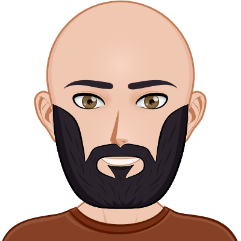

¡Hola!

Mi nombre es Julián Sanchez, soy estudiante del Profesorado en Computación en la Facultad de Ciencias Exactas y Naturales de la Universidad Nacional de La Pampa.
Este sítio está pensado para compartir los trabajos y proyectos que haremos en la carrera. De momento son pocos... ¡pero pronto se añadirán más!.
Para comenzar, podés hacer click en el "Catálogo de Recursos" para acceder a los mismos.